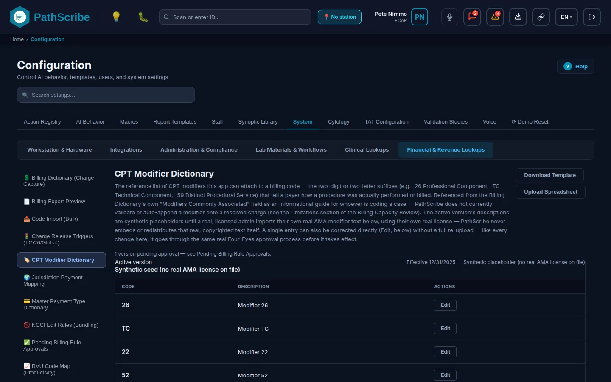
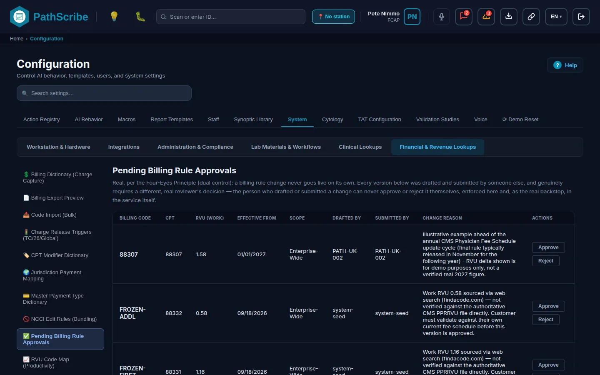
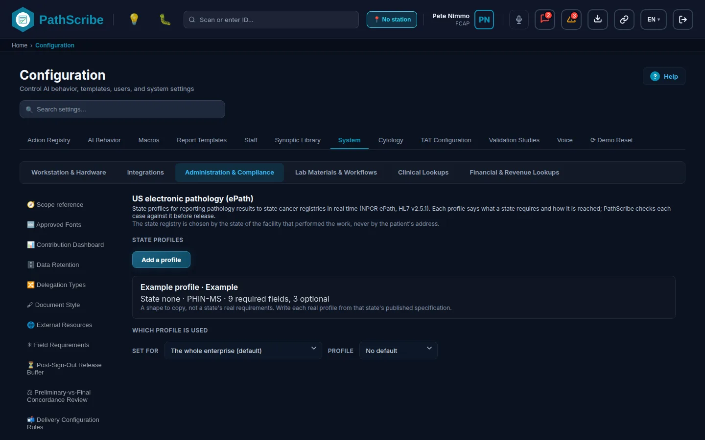
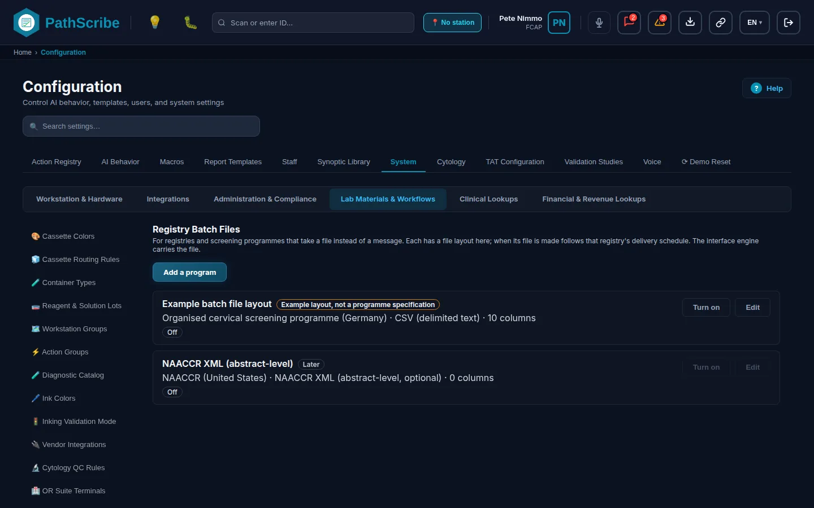
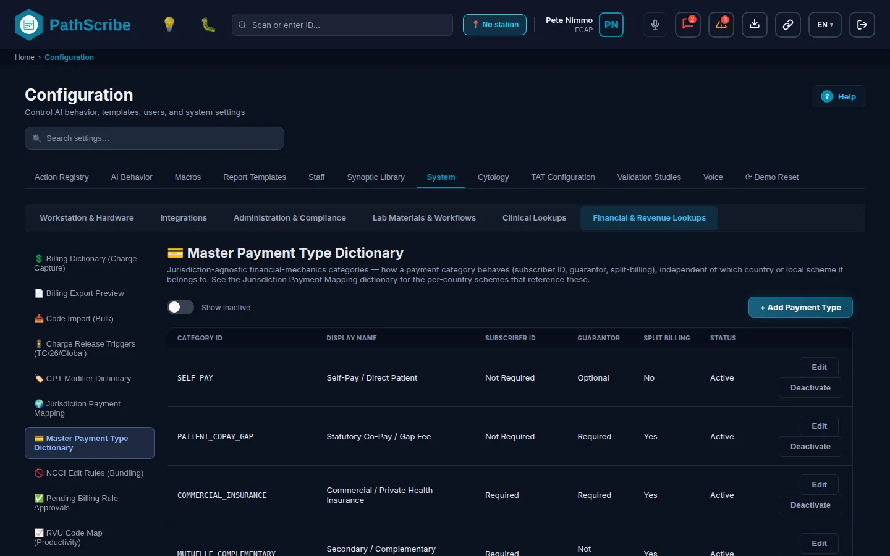

# Stufe 7: Abrechnung, Erlösmanagement und Registermeldung
Dieses Kapitel beschreibt, wie PathScribe entscheidet, was berechnet wird, wann eine Leistung das System verlassen darf und an welche Krebs- und Screening-Register ein Fall gemeldet wird. Es behandelt außerdem die Zahlungsnachschlagewerke, die der Leistungsdatensatz verwendet, und die Seite Systemprotokolle, auf der Sie Finanzereignisse beobachten.
Lesen Sie zuerst diese drei Punkte, denn sie legen fest, was Sie erwarten können und was nicht.
- Was PathScribe mit Geld tut. PathScribe löst jede Leistung einmal bei der Finalisierung in einen festen Datensatz auf: CPT- oder HCPCS-Code, Relative Value Units (RVU) und Modifikator. PathScribe führt keine Preise. Gebührenverzeichnisse: Nicht umgesetzt. In den Abrechnungsregeln gibt es kein Feld für einen Geldbetrag, einen Preis oder einen Kostenträgersatz. Der Leistungsdatensatz enthält keine Geldbeträge. Die Vergütung wird von Ihrem Abrechnungssystem oder von der Schnittstellen-Engine berechnet, nicht von PathScribe.
- Was PathScribe mit Registern tut. PathScribe entscheidet, ob ein Fall meldepflichtig ist, prüft die Pflichtdaten und erstellt einen strukturierten JSON-Datensatz. PathScribe schreibt weder NAACCR XML noch COSD XML noch ein anderes Übertragungsformat eines Registers. Die Schnittstellen-Engine (die Engine von ForMedrixAI, die mit PathScribe ausgeliefert wird) übersetzt und überträgt. Keine Registerspezifikation im Produkt ist anhand der veröffentlichten Spezifikation des Registers bestätigt, sofern der Abschnitt nichts anderes sagt.
- Der größte Teil dieses Kapitels ist heute Demonstration. Die Produktivspeicherung ist Microsoft SQL Server hinter einer ASP.NET-Core-API. Die Dienste hinter diesen Bildschirmen sind im Browser gehaltene Demonstrationsdienste, und die API-Verträge in
docs/architecturesagen nichts darüber, dass etwas gegen einen echten Server erprobt wurde. Jeder Bildschirm trägt seinen eigenen Status.
Reihenfolge der Einrichtung für Stufe 7
Richten Sie die Bildschirme in dieser Reihenfolge ein. Das Feld „Einrichtungsreihenfolge“ jedes Bildschirms zeigt, was er voraussetzt.
- CPT-Modifikator-Wörterbuch: die Modifikatorliste, die das Abrechnungswörterbuch anbietet.
- RVU-Codetabelle: die Liste der CPT-Codes mit Relative Value Units, auf die jede Abrechnungsregel verweist.
- Abrechnungswörterbuch (Leistungserfassung): die versionierten Abrechnungsregeln.
- NCCI-Bearbeitungsregeln: die Bündelungspaare (Sie laden sie hoch; es werden keine mitgeliefert).
- Ausstehende Abrechnungsregel-Genehmigungen: eine zweite Person genehmigt die Schritte 1 bis 4, bevor etwas wirksam wird.
- Gebührenfreigabe-Auslöser: der Fall-Meilenstein, bei dem jede Abrechnungsart ihre Leistung erzeugt.
- Abrechnungsfreigabe: Rückhalte- und Stapelregeln für Leistungen, die bereit sind.
- Stammwörterbuch der Zahlungsarten: die Zahlungskategorien.
- Rechtsordnung-Zahlungszuordnung: lokale Kostenträgersysteme, die diesen Kategorien zugeordnet sind.
- Vorschau des Abrechnungsexports: prüfen, was ein echter Fall senden würde.
- Krebsregister-Berichterstattung: das Register je Einrichtung und die Freigabe für den Livebetrieb.
- Britisches Krebsregister (COSD): Zieleinstellungen für England.
- Elektronische Pathologie (USA): Bundesstaatsprofile für den US-ePath-Feed.
- Zytologie-Register-Meldung: Einstellungen für das Zervix-Screening-Programm.
- Registry-Stapeldateien: dateibasierte Registerlieferungen.
Der Reiter Abrechnung der Systemprotokolle ist eine Referenzseite. Er ist nicht Teil der Einrichtung.
In diesem Kapitel nicht umgesetzt: Gebührenverzeichnisse, KI- oder sprachbasierte Abrechnungsvorschläge aus dem Befundtext, X12 837P, die Ausgabe für KVDT und SESAM-Vitale, NAACCR-XML-Stapeldateien sowie die Qualitätsmeldung für MIPS und MACRA.
# Aufbau der Abrechnungs-Engine
Wie eine Leistung modelliert wird. PathScribe teilt eine Leistung in eine technische Komponente, eine professionelle Komponente oder beide zusammen. Das Produkt nennt diese Abrechnungsarten:
| Abrechnungsart | Bezeichnung auf dem Bildschirm | Was sie abdeckt | Modifikatorsatz |
|---|---|---|---|
| TC | Technisch (TC) | Laborarbeit: Zuschnitt, Aufarbeitung, Objektträger, Färbungen | -TC |
| 26 | Professionell (26 Prof.) | Die Befundung durch die Pathologin oder den Pathologen | -26 |
| Global | Kombiniert (Global) | Beide Teile gemeinsam abgerechnet | Keiner |
PathScribe setzt den Modifikator ohne Ausnahme aus der Abrechnungsart: TC erhält -TC, 26 erhält -26, Global erhält keinen. Andere Modifikatoren dienen nur der Information.
Wann eine Leistung erzeugt wird. Standardmäßig wird die technische Komponente erzeugt, wenn die Probe zugeschnitten wird. Die professionelle und die globale Komponente werden beim endgültigen Abschluss erzeugt. Sie können das für das gesamte Unternehmen oder für einen Standort unter Gebührenfreigabe-Auslöser ändern.
Leistungen sind nach der Erzeugung fest. Bei der Finalisierung löst PathScribe die Leistung einmal in einen unveränderlichen Leistungsdatensatz auf, der eine Momentaufnahme von CPT, HCPCS, RVU und Modifikator behält. Spätere Änderungen an einer Abrechnungsregel ändern eine bereits erzeugte Leistung nicht. Eine Korrektur nach dem Abschluss verwendet ein Paar aus Gutschrift und Neuabrechnung, keine Bearbeitung.
Abrechnungsregeln sind versioniert. Eine Abrechnungsregel wird durch Abrechnungscode, Geltungsbereich und Version bestimmt. Versionen werden nur hinzugefügt. Die Status sind DRAFT, PENDING_APPROVAL, ACTIVE, REJECTED und RETIRED. Die Person, die eine Version entwirft oder einreicht, kann sie nicht genehmigen (das Vier-Augen-Prinzip, in den Diensten durchgesetzt). Bei der Genehmigung wird die neue Version wirksam, und die Version, die sie ersetzt, endet.
Geltungsbereich. Eine Regel gilt unternehmensweit oder für einen Standort. Auf diesen Bildschirmen wird das Wort Standort verwendet, nicht Einrichtung.
Geteilte Fälle. Wird die technische Komponente in einem anderen Labor erbracht als die professionelle Befundung, trägt der Fall eine Einrichtung der technischen Komponente und die durchführende Einrichtung. Die Freigabeentscheidung prüft das (siehe Abrechnungsfreigabe).
Wohin Leistungen gehen. Bereite Leistungen gehen in die Ausgangswarteschlange. Eine Leistung mit dem Status PENDING_APPROVAL oder HOLD wird vom ausgehenden Durchlauf übersprungen. Die Schnittstellen-Engine übernimmt Transport, Übersetzung und Wiederholungen. PathScribe entscheidet nur, was wann freigegeben wird.
Optionale Leistungsgenehmigung. Eine Leistung kann zur Genehmigung zurückgehalten werden. Die Genehmigungsberechtigung billing:charge:approve wird je durchführendem Labor geprüft. Sie steht im Berechtigungskatalog, aber keine eingebaute Rolle hält sie standardmäßig. Vergeben Sie sie über Rollenverzeichnis, wenn Sie die Leistungsgenehmigung verwenden.
# Gebührenfreigabe-Auslöser (TC/26/Global)
Status: Demonstration
1. Navigation: Reiter Konfiguration System > Gruppe Finanz- & Umsatz-Nachschlagewerke 2. Wartungspunkt: Gebührenfreigabe-Auslöser (TC/26/Global)
3. Geschäftszweck und Umfang. Legt den Fall-Meilenstein fest, bei dem jede Abrechnungsart ihre Leistung erzeugt. Die Standardwerte sind: TC bei Probe zugeschnitten, 26 und Global bei Fall abgeschlossen. Sie können einen Standardwert für das gesamte Unternehmen oder für einen Standort überschreiben. Ein Standort ohne eigene Überschreibung verwendet die Einstellung des Unternehmens.
4. Voraussetzungen und Abhängigkeiten. Eine Standortüberschreibung kann nur für einen vorhandenen Standort gesetzt werden; richten Sie daher zuerst die Einrichtungen ein. Ohne einen Standort in der Liste können Sie weiterhin unternehmensweite Auslöser setzen.
5. Bildschirm.

6. Feldreferenz.
| Feldname | Datentyp / Format | Pflicht/Optional | Beschreibung und Geschäftslogik | Systemstandard |
|---|---|---|---|---|
| Bereichsauswahl | Auswahl von Unternehmen oder einem Standort | Pflicht | Legt fest, wessen Auslöser Sie ansehen und ändern. | Unternehmen |
| Auslöser Technisch (TC) | Auswahl von Fall-Meilensteinen | Pflicht | Der Meilenstein, bei dem die technische Leistung erzeugt wird. Das Speichern der Auswahlliste speichert sofort. | Probe zugeschnitten (SPECIMEN_GROSSED) |
| Auslöser Professionell (26 Prof.) | Auswahl von Fall-Meilensteinen | Pflicht | Der Meilenstein, bei dem die professionelle Leistung erzeugt wird. Speichert sofort. | Fall abgeschlossen (CASE_SIGNED_OUT) |
| Auslöser Kombiniert (Global) | Auswahl von Fall-Meilensteinen | Pflicht | Der Meilenstein, bei dem die globale Leistung erzeugt wird. Speichert sofort. | Fall abgeschlossen (CASE_SIGNED_OUT) |
| Auf Standard zurücksetzen | Schaltfläche | Optional | Entfernt die Überschreibung für den gewählten Bereich und stellt den eingebauten Standard wieder her. | Nicht zutreffend |
7. Berechtigungen. Bildschirm öffnen: screen:configuration:open. Ändern: config:billing-triggers:manage. Admin und Laborleitung halten sie standardmäßig. Jede Änderung schreibt ein Audit-Ereignis („Charge release trigger changed“, „Charge release triggers reset to default“).
Bekannte Grenzen. Demonstrationsdienst allein. Eine Änderung eines Auslösers wirkt sich auf Leistungen aus, die ab dann erzeugt werden, und ändert bereits erzeugte Leistungen nicht.
# Regeln der Leistungserfassung, CPT/HCPCS-Zuordnung und Gebührenverzeichnisse
Gebührenverzeichnisse: Nicht umgesetzt. Die Gliederung verlangt Gebührenverzeichnisse. Es gibt keinen Bildschirm, keinen Vertrag und kein Feld für einen Geldbetrag, einen Preis oder einen kostenträgerspezifischen Satz. Eine Abrechnungsregel enthält nur den CPT-Code, den HCPCS-Code und die RVU-Werte für Arbeit (Work), Praxiskosten (PE) und Haftpflicht (MP). Das Naheliegendste, was es gibt, sind die RVU-Werte im Abrechnungswörterbuch und in der RVU-Codetabelle. Die Prüfung ZERO_FEE_MAPPING_ERROR ist wie eine Gebührenprüfung benannt, prüft aber auf eine Leistung, die mit null RVU über Work, PE und MP aufgelöst wurde und keinen Unterdrückungshinweis hat.
Codes im Massenimport laden. Um CPT-, HCPCS- oder andere Codelisten im Massenimport zu laden, verwenden Sie Code-Import (Massenimport). Er ist bei den übrigen Nachschlagewerken dokumentiert.
Automatische Kodierung. Siehe den Absatz zum Status unter Engine für die automatische Kodierung und Rückhalteregeln der Abrechnung.
# CPT-Modifikator-Wörterbuch
Status: Demonstration
1. Navigation: Reiter Konfiguration System > Gruppe Finanz- & Umsatz-Nachschlagewerke 2. Wartungspunkt: CPT-Modifikator-Wörterbuch
3. Geschäftszweck und Umfang. Die Liste der CPT-Modifikatorcodes (zum Beispiel 26, TC, 59, XS), die der Reiter Kodierungsregeln des Abrechnungswörterbuchs anbietet. Die Modifikatoren hier dienen nur der Information. PathScribe prüft oder ergänzt keinen Modifikator außer der festen TC- und 26-Regel, die in der Einführung des Kapitels beschrieben ist.
Die mitgelieferten Beschreibungen sind Platzhalter wie „Modifier 59“, als synthetisch gekennzeichnet, weil der Text der American Medical Association (AMA) lizenzpflichtig ist. Wenn Sie eine Lizenz besitzen, laden Sie Ihre eigenen Beschreibungen.
4. Voraussetzungen und Abhängigkeiten. Dies ist ein Ausgangspunkt. Jede Änderung wird zu einer neuen Version, die auf Genehmigung wartet; vor dem Wirksamwerden einer Änderung ist daher eine zweite Person mit Genehmigungsrecht nötig.
5. Bildschirm.

6. Feldreferenz.
| Feldname | Datentyp / Format | Pflicht/Optional | Beschreibung und Geschäftslogik | Systemstandard |
|---|---|---|---|---|
| Versionsbezeichnung | Text, schreibgeschützt | Nicht zutreffend | Die aktive Version des Wörterbuchs. Ausgangsversions-ID modifier-v-seed-2026. Eine zweite, ausstehende lizenzierte Version ist ebenfalls vorgegeben. |
Ausgangsversion |
| Code | Text, schreibgeschützt | Nicht zutreffend | Der Modifikatorcode. Vorgegeben: 26, TC, 22, 52, 53, 59, XE, XS, XP, XU, 76, 77, 90, 91, 92 (15 Codes). | 15 vorgegebene Codes |
| Beschreibung | Text | Pflicht beim Bearbeiten einer Zeile | Die Beschreibung, die das Personal sieht. Das Speichern erzeugt eine neue Version mit dem Status PENDING_APPROVAL; sie wird nie automatisch aktiviert. | „Modifier {code}“ (synthetisch) |
| Lizenzstatus | Text, schreibgeschützt | Nicht zutreffend | Zeigt synthetic für die mitgelieferten Platzhalter. |
synthetic |
| CSV hochladen | Datei, CSV | Optional | Ersetzt das Wörterbuch durch eine Datei mit den Spalten Code und Description. Vorlage: ModifierDictionaryTemplate.csv. Erzeugt eine ausstehende Version. |
Keine |
| Lizenzbestätigung | Kontrollkästchen | Pflicht zum Hochladen | Sie bestätigen, dass Sie das Recht besitzen, die hochgeladenen Beschreibungen zu verwenden. Ohne diese Bestätigung wird der Upload nicht fortgesetzt. | Nicht angehakt |
| Versionsbezeichnung für den Upload | Text | Optional | Benennt die ausstehende Version. | Keine |
7. Berechtigungen. Bildschirm öffnen: screen:configuration:open. Anlegen oder bearbeiten: config:billing-modifiers:manage. Eine Version genehmigen, ablehnen oder aktivieren: config:billing-tables:approve, verwendet unter Ausstehende Abrechnungsregel-Genehmigungen. Admin und Laborleitung halten beide standardmäßig. Die Person, die eine Version eingereicht hat, kann sie nicht genehmigen.
Bekannte Grenzen. Das Wörterbuch ist nur eine Liste. Kein Bildschirm und keine Prüfung erzwingt einen Modifikator an einer Leistung. Der mitgelieferte Text ist synthetisch.
# RVU-Codetabelle (Produktivität)
Status: Demonstration
1. Navigation: Reiter Konfiguration System > Gruppe Finanz- & Umsatz-Nachschlagewerke 2. Wartungspunkt: RVU-Codetabelle (Produktivität)
3. Geschäftszweck und Umfang. Eine kleine, kuratierte Liste von CPT-Codes mit ihren Relative Value Units, verwendet für die Produktivität der Pathologinnen und Pathologen (Work-RVU) und als Quellliste, aus der das Abrechnungswörterbuch CPT-Codes auswählt. Sie ist kein Abrechnungssystem und enthält keine Geldbeträge. Die Vorgabe ist eine Teilmenge der Relative-Value-Datei des CMS-Gebührenverzeichnisses für Ärzte 2026, bezeichnet als „CMS 2026 (April update)“ (Versions-ID rvu-v-seed-2026). Mehrere Zeilen haben keine Work-RVU und werden als Nicht verifiziert angezeigt.
4. Voraussetzungen und Abhängigkeiten. Dies ist ein Ausgangspunkt. Eine ausstehende oder abgelehnte Version wird nie zur Auflösung einer Leistung verwendet; nichts, was Sie hochladen, zählt daher, bis eine zweite Person es genehmigt.
5. Bildschirm.

6. Feldreferenz.
| Feldname | Datentyp / Format | Pflicht/Optional | Beschreibung und Geschäftslogik | Systemstandard |
|---|---|---|---|---|
| Version | Text, schreibgeschützt | Nicht zutreffend | Die Bezeichnung der aktiven Version. | CMS 2026 (April update) |
| Suche | Text | Optional | Filtert die Tabelle. | Keine |
| CSV hochladen | Datei, CSV | Optional | Spalten: Code oder HCPCS, Description, WorkRVU. Beachtet den CMS-Statuscode (nur Zeilen mit A, R und T sind abrechenbar) und überspringt Modifikatorzeilen. Hochgeladene Zeilen erhalten ihre Ebene aus der Beschreibung abgeleitet (Standard Probe) und die Abrechnungsart Global. Erzeugt eine ausstehende Version. Vorlage: RvuCodeMapTemplate.csv. |
Keine |
| Versionsbezeichnung für den Upload | Text | Optional | Benennt die ausstehende Version. | Keine |
Bearbeitungsfenster
| Feldname | Datentyp / Format | Pflicht/Optional | Beschreibung und Geschäftslogik | Systemstandard |
|---|---|---|---|---|
| Code | Text | Pflicht | Der CPT-Code. Beim Bearbeiten einer vorhandenen Zeile gesperrt. Ein doppelter Code wird abgelehnt. | Keine |
| Abrechnungscode | Text | Pflicht | Der Abrechnungscode von PathScribe. Beim Bearbeiten gesperrt. | Keine |
| Beschreibung | Text | Optional | Einfache Beschreibung. | Keine |
| Ebene | Auswahl: specimen, block, stain, decant | Pflicht | Worauf der Code gezählt wird. | specimen |
| Komponententyp | Auswahl: TC, 26, Global | Pflicht | Die Abrechnungsart, für die diese Zeile gilt. | Global |
| Work-RVU | Positive Zahl | Optional | Leer lassen, um die Zeile als Nicht verifiziert zu markieren. | Leer |
| RVU PE | Zahl | Optional | RVU der Praxiskosten. | Leer |
| RVU MP | Zahl | Optional | RVU der Haftpflicht. | Leer |
| HCPCS | Text | Optional | Code der Stufe II, falls einer zutrifft. | Leer |
7. Berechtigungen. Bildschirm öffnen: screen:configuration:open. Bearbeiten oder hochladen: config:billing-rvu:manage. Genehmigen: config:billing-tables:approve. Admin und Laborleitung halten beide standardmäßig. Das Vier-Augen-Prinzip gilt.
Bekannte Grenzen. Die Liste ist eine kuratierte Teilmenge, nicht die vollständige CMS-Datei. Die Auswahl des Basiscodes auf Probenebene (88302, 88305, 88309) lässt sich aus den Falldaten nicht ermitteln und erfolgt daher nicht automatisch.
# Abrechnungswörterbuch (Leistungserfassung)
Status: Demonstration
1. Navigation: Reiter Konfiguration System > Gruppe Finanz- & Umsatz-Nachschlagewerke 2. Wartungspunkt: Abrechnungswörterbuch (Leistungserfassung)
3. Geschäftszweck und Umfang. Die versionierte Liste der Abrechnungsregeln. Jede Regel verknüpft einen Abrechnungscode von PathScribe mit einem CPT-Code, einem optionalen HCPCS-Code, einer Abrechnungsart und RVU-Werten, für das Unternehmen oder für einen Standort. Eine Standortüberschreibung ersetzt für diesen Standort die Unternehmensregel. Leistungen werden aus diesen Regeln aufgelöst, wenn ein Fall finalisiert wird.
4. Voraussetzungen und Abhängigkeiten. Die CPT-Auswahl liest die RVU-Codetabelle, und die Modifikator-Kontrollkästchen lesen das CPT-Modifikator-Wörterbuch. Wenn Sie diese überspringen, ist die CPT-Suche leer, und es werden keine Modifikatoren angeboten.
5. Bildschirm.

6. Feldreferenz.
| Feldname | Datentyp / Format | Pflicht/Optional | Beschreibung und Geschäftslogik | Systemstandard |
|---|---|---|---|---|
| Ansicht | Auswahl von Unternehmen oder einem Standort | Pflicht | Wessen Regeln die Tabelle zeigt. | Unternehmen |
| Abrechnungscode | Text, Spalte | Nicht zutreffend | Der Abrechnungscode von PathScribe. | Keine |
| CPT | Text, Spalte | Nicht zutreffend | Der CPT-Code. | Keine |
| Beschreibung | Text, Spalte | Nicht zutreffend | Die Beschreibung der Regel. | Keine |
| RVU (Work) | Zahl, Spalte | Nicht zutreffend | Work-RVU. Ein Hinweis „Code Map: N“ erscheint, wenn die gespeicherte RVU von der RVU-Codetabelle abweicht. | Keine |
| Gültig ab | Datum, Spalte | Nicht zutreffend | Das Datum, an dem die aktive Version beginnt. | Keine |
| Geltungsbereich | Text, Spalte | Nicht zutreffend | Unternehmensweit, Standort-Überschreibung oder Geerbt. | Keine |
| Status | Text, Spalte | Nicht zutreffend | Der Status der Version. | Keine |
| Versionen | Zahl, Spalte | Nicht zutreffend | Wie viele Versionen vorhanden sind. | Keine |
| Aktionen | Schaltflächen | Optional | Verlauf, Duplizieren, Neue Version. | Nicht zutreffend |
Fenster Neue Version, Reiter Abrechnung & RVU
| Feldname | Datentyp / Format | Pflicht/Optional | Beschreibung und Geschäftslogik | Systemstandard |
|---|---|---|---|---|
| Abrechnungscode | Text | Pflicht für einen neuen Code | Der Code, zu dem diese Regel gehört. | Keine |
| Geltungsbereich | Auswahl von Unternehmen oder einem Standort | Pflicht | Wo die Regel gilt. | Der angezeigte Geltungsbereich |
| Land | Auswahl: US, UK, AU, CA, die 27 EU-Staaten, NZ | Optional | Das Land, für das der Code gedacht ist. | Keine |
| HCPCS-Code | Suche | Optional | Durchsucht das eingebettete, gemeinfreie HCPCS-Verzeichnis der Stufe II. | Leer |
| CPT-Code | Suche in den Einträgen der RVU-Codetabelle | Pflicht | Der CPT-Code, der abgerechnet wird. | Keine |
| Beschreibung | Text | Optional | Beschreibung der Regel. | Leer |
| Ebene | Auswahl: specimen, block, stain, decant | Pflicht | Worauf der Code gezählt wird. | specimen |
| Komponententyp | Auswahl: TC, 26, Global | Pflicht | Die Abrechnungsart. | Global |
| RVU Work, PE, MP | Zahlen | Optional | Die drei RVU-Werte. | Leer |
| Gültig ab | Datum | Pflicht | Startdatum der Version. | Keine |
| Änderungsgrund | Text | Pflicht, wenn der Geltungsbereich bereits Versionen hat | Wird für die Prüfung an der Version aufbewahrt. | Leer |
| Notizen | Text | Optional | Freie Notizen. | Leer |
Fenster Neue Version, Reiter Kodierungsregeln
Diese Angaben dienen der Information und werden nie erzwungen.
| Feldname | Datentyp / Format | Pflicht/Optional | Beschreibung und Geschäftslogik | Systemstandard |
|---|---|---|---|---|
| Häufig zugeordnete Modifikatoren | Kontrollkästchen aus dem CPT-Modifikator-Wörterbuch | Optional | Erinnerung an Modifikatoren, die oft zu diesem Code gehören. | Keines angehakt |
| Mengenregel | Text | Optional | Hinweis zu den Einheiten. | Leer |
| Bündelungsregel | Text | Optional | Hinweis zur Bündelung. NCCI-Paare werden unter NCCI-Bearbeitungsregeln geführt. | Leer |
| Dokumentationsanforderungen | Kommagetrennter Text | Optional | Was die Dokumentation zeigen soll. | Leer |
| Unterdrückungshinweis | Text | Optional | Kennzeichnet eine Regel mit null RVU als beabsichtigt, damit die Prüfung auf null Gebühr still bleibt. | Leer |
Fenster Verlauf
| Feldname | Datentyp / Format | Pflicht/Optional | Beschreibung und Geschäftslogik | Systemstandard |
|---|---|---|---|---|
| Version | Zahl, Spalte | Nicht zutreffend | Versionsnummer. | Keine |
| CPT | Text, Spalte | Nicht zutreffend | CPT in dieser Version. | Keine |
| RVU (Work) | Zahl, Spalte | Nicht zutreffend | Work-RVU. | Keine |
| Gültig ab, Gültig bis | Daten, Spalten | Nicht zutreffend | Der Zeitraum, in dem die Version galt. | Keine |
| Status | Text, Spalte | Nicht zutreffend | DRAFT, PENDING_APPROVAL, ACTIVE, REJECTED oder RETIRED. | Keine |
| Änderungsgrund | Text, Spalte | Nicht zutreffend | Der eingegebene Grund. | Keine |
| Aktionen | Schaltflächen | Optional | Duplizieren. Zur Genehmigung einreichen (Versionen mit DRAFT). Zurückziehen (Versionen mit ACTIVE). | Nicht zutreffend |
Eine neue Version wird immer als DRAFT gespeichert. Zur Genehmigung einreichen setzt sie auf PENDING_APPROVAL.
7. Berechtigungen. Bildschirm öffnen: screen:configuration:open. Anlegen, einreichen und zurückziehen: config:billing-rules:manage. Genehmigen oder ablehnen: config:billing-tables:approve. Admin und Laborleitung halten beide standardmäßig. Audit-Ereignisse werden für eingereichte, genehmigte und abgelehnte Versionen geschrieben („Billing rule submitted for approval“).
Bekannte Grenzen. Es gibt kein Preis- oder Gebührenfeld (siehe Gebührenverzeichnisse oben). Die Kodierungsregeln sind nur Hinweise.
# Engine für die automatische Kodierung und Rückhalteregeln der Abrechnung
Engine für die automatische Kodierung: Teilweise. Eine regelbasierte Kodierung, die immer von einer Person bestätigt wird, ist umgesetzt:
- Vorgeschlagene Codes aus strukturierten Falldaten: Färbungskategorien, 88312 für eine Spezialfärbung, 88342 und +88341 für die Immunhistochemie je Probe sowie 88331 oder 88332 für einen Schnellschnitt.
- Eine Ausweichliste mit Standardcodes. Sie ist nicht abrechnungsbereit.
- Manuelle Codeeingabe im Codefenster und im Abrechnungsprüfbereich.
Nicht umgesetzt: Vorschläge aus dem Befundtext durch KI oder Sprachverarbeitung. Diese Arbeit hängt von der Stellungnahme von Rechtsberatung und Compliance ab. Basiscodes für Proben (88302, 88305, 88309) werden nicht automatisch ermittelt. Der nächstliegende Konfigurationsbildschirm ist Smart Capture.
Abrechnungsprüfungen beim Abschluss. Beim Abschluss führt PathScribe sechs Prüfungen aus und erfasst für jeden Befund einen Mangel:
| Auslöser | Code | Schweregrad |
|---|---|---|
| A | UNSUPPORTED_CPT_LEVEL |
COMPLIANCE_WARNING |
| B | NCCI_BUNDLING_VIOLATION (nur Paare mit Modifikatorkennzeichen 0) |
CRITICAL_REJECTION_RISK |
| C | MISSING_DIAGNOSTIC_ICD10 |
CRITICAL_REJECTION_RISK |
| D | UNATTACHED_ANCILLARY_ORDER |
COMPLIANCE_WARNING |
| E | MODIFIER_MISMATCH |
CRITICAL_REJECTION_RISK |
| F | ZERO_FEE_MAPPING_ERROR |
REVENUE_LEAKAGE |
MISSING_CHARGE, POST_SIGNOUT_CORRECTION und BLOCK_DELETED werden außerhalb des Abschlusses ausgelöst. Diese Prüfungen hindern die Pathologin oder den Pathologen nie am Abschluss. Eine Einblendung meldet, dass Abrechnungspositionen für die Qualitätssicherung markiert wurden, und die Befunde gehen an die Qualitätssicherung. Sie blockieren jedoch den Export: Ein Fall kann nicht exportiert werden, solange ein Mangel OPEN oder UNDER_REVIEW ist. Die Status sind OPEN, UNDER_REVIEW, RESOLVED und OVERRIDDEN_WITH_JUSTIFICATION.
# NCCI-Bearbeitungsregeln (Bündelung)
Status: Demonstration
1. Navigation: Reiter Konfiguration System > Gruppe Finanz- & Umsatz-Nachschlagewerke 2. Wartungspunkt: NCCI-Bearbeitungsregeln (Bündelung)
3. Geschäftszweck und Umfang. Enthält die Paare von Verfahren zu Verfahren der National Correct Coding Initiative (NCCI): ein Code der Spalte 1 und ein Code der Spalte 2, die nicht zusammen abgerechnet werden dürfen. Ein Paar mit Modifikatorkennzeichen 0 löst beim Abschluss einen Mangel aus. Echte CMS-Daten werden nicht mitgeliefert. Die Vorgabe ist ein synthetisches Paar (88305 mit 88300, Kennzeichen 0, Quartal DEMO), und der Bildschirm zeigt eine Warnung. Der Lizenzinhaber lädt die CSV-Datei hoch.
4. Voraussetzungen und Abhängigkeiten. Dies ist ein Ausgangspunkt. Ein Upload oder eine Bearbeitung wird zu einem ausstehenden Import; vor der Verwendung der Paare ist daher eine Genehmigung nötig.
5. Bildschirm.

6. Feldreferenz.
| Feldname | Datentyp / Format | Pflicht/Optional | Beschreibung und Geschäftslogik | Systemstandard |
|---|---|---|---|---|
| Quartalsversion | Text, zum Beispiel 2026Q3 |
Pflicht zum Hochladen | Benennt den Import. | Keine |
| CSV hochladen | Datei, CSV | Optional | Spalten: Column 1, Column 2, Modifier Indicator (0, 1 oder 9), Effective Date, Deletion Date. Vorlage: NcciPtpEditTemplate.csv. Erzeugt einen ausstehenden Import. |
Keine |
| Paartabelle | Tabelle, schreibgeschützt | Nicht zutreffend | Spalte 1, Spalte 2, Kennzeichen, Daten für den aktiven Import. | Ein synthetisches Paar |
| Warnung zu synthetischen Daten | Hinweis | Nicht zutreffend | Wird angezeigt, solange der aktive Import die synthetische Vorgabe ist. | Angezeigt |
Bearbeitungsfenster
| Feldname | Datentyp / Format | Pflicht/Optional | Beschreibung und Geschäftslogik | Systemstandard |
|---|---|---|---|---|
| Modifikatorkennzeichen | Auswahl: 0 nie umgehbar, 1 mit einem Modifikator umgehbar, 9 Bearbeitungsregel gilt nicht | Pflicht | Nur Paare mit 0 lösen beim Abschluss einen Mangel aus. | Aktueller Wert |
| Löschdatum | Datum | Optional | Das Datum, ab dem das Paar nicht mehr gilt. | Leer |
Jede Bearbeitung sendet die gesamte Tabelle erneut als neuen Import mit dem Status PENDING_APPROVAL, benannt „Manual edit“ mit dem Paar.
7. Berechtigungen. Bildschirm öffnen: screen:configuration:open. Hochladen oder bearbeiten: config:billing-ncci:manage. Genehmigen: config:billing-tables:approve. Admin und Laborleitung halten beide standardmäßig.
Bekannte Grenzen. Es werden keine echten NCCI-Daten mitgeliefert. Die Kennzeichen 1 und 9 lösen keinen Mangel aus.
# Ausstehende Abrechnungsregel-Genehmigungen
Status: Demonstration
1. Navigation: Reiter Konfiguration System > Gruppe Finanz- & Umsatz-Nachschlagewerke 2. Wartungspunkt: Ausstehende Abrechnungsregel-Genehmigungen
3. Geschäftszweck und Umfang. Die Genehmigungswarteschlange für die zweite Person. Versionen von Abrechnungsregeln, Versionen des Modifikatorverzeichnisses, NCCI-Importe, RVU-Versionen und Code-Importaufträge warten hier. Nichts wird wirksam, bevor eine andere Person als die einreichende es genehmigt.
4. Voraussetzungen und Abhängigkeiten. Die Warteschlange zeigt nur Einträge, die die vorherigen Bildschirme eingereicht haben. Die genehmigende Person braucht die Genehmigungsberechtigung und darf nicht die einreichende Person sein.
5. Bildschirm.

6. Feldreferenz.
| Feldname | Datentyp / Format | Pflicht/Optional | Beschreibung und Geschäftslogik | Systemstandard |
|---|---|---|---|---|
| Abrechnungscode | Text, Spalte | Nicht zutreffend | Regeltabelle: der Code der Regel. | Keine |
| CPT | Text, Spalte | Nicht zutreffend | Regeltabelle. | Keine |
| RVU (Work) | Zahl, Spalte | Nicht zutreffend | Regeltabelle. | Keine |
| Gültig ab | Datum, Spalte | Nicht zutreffend | Regeltabelle. | Keine |
| Geltungsbereich | Text, Spalte | Nicht zutreffend | Regeltabelle. | Keine |
| Entworfen von | Text, Spalte | Nicht zutreffend | Regeltabelle: die Person, die den Entwurf erstellt hat. | Keine |
| Eingereicht von | Text, Spalte | Nicht zutreffend | Regeltabelle: die Person, die eingereicht hat. | Keine |
| Änderungsgrund | Text, Spalte | Nicht zutreffend | Regeltabelle. | Keine |
| Verzeichnis | Text, Spalte | Nicht zutreffend | Verzeichnistabelle: welches Verzeichnis (Code-Import, Modifikator, NCCI, RVU). | Keine |
| Bezeichnung | Text, Spalte | Nicht zutreffend | Verzeichnistabelle: Bezeichnung der Version oder des Auftrags. | Keine |
| Genehmigen | Schaltfläche | Optional | Aktiviert den Eintrag. Bei einem Code-Import wird der gesamte Auftrag angewendet. Wenn Sie ihn eingereicht haben, ist die Schaltfläche gesperrt, und ein Hinweis nennt den Grund. | Nicht zutreffend |
| Ablehnen | Schaltfläche | Optional | Öffnet ein Begründungsfeld; Ablehnung bestätigen beendet den Eintrag. | Nicht zutreffend |
| Ablehnungsgrund | Text | Pflicht zum Ablehnen | Wird mit der Entscheidung gespeichert. | Leer |
7. Berechtigungen. Bildschirm öffnen: screen:configuration:open. Genehmigen und ablehnen: config:billing-tables:approve. Admin und Laborleitung halten sie standardmäßig. Entscheidungen schreiben Audit-Ereignisse.
Bekannte Grenzen. In einem System mit nur einer Person kann niemand genehmigen, weil die einreichende Person ihren eigenen Eintrag nicht genehmigen kann.
# Abrechnungsfreigabe
Status: Demonstration
1. Navigation: Reiter Konfiguration System > Gruppe Verwaltung & Compliance 2. Wartungspunkt: Abrechnungsfreigabe
3. Geschäftszweck und Umfang. Die Rückhalteregeln. Jede Regel legt fest, welche Leistungen sie erfasst und was mit ihnen geschieht: sofort freigeben, für eine Zeit zurückhalten oder in einem geplanten Stapel freigeben, mit oder ohne manuelle Prüfung. Die spezifischste passende Regel gilt. PathScribe entscheidet, was und wann. Die Schnittstellen-Engine befördert die Nachricht.
Spezifitätspunkte: Einrichtung 100, Abrechnungsart 8, Falltypen 4, einsendender Standort 4, Pathologe 2, Änderung 1.
Wenn keine Regel passt: Freigabe zum Meilenstein, manuelle Prüfung an, automatische Freigabe an.
Gilt immer: Eine Änderung einer Abrechnung wird zur Prüfung geparkt; eine Leistung, deren CPT keine Zuordnung hat, wird geparkt (unmappedCpt); ein geteilter Fall ohne technische Einrichtung wird geparkt (missingTechnicalFacility).
4. Voraussetzungen und Abhängigkeiten. Eine Regel kann eine Einrichtung oder einen einsendenden Standort nennen; richten Sie diese daher zuerst ein. Ein geplanter Stapel wird nach einem Zeitplan gesendet, der in den Zustellzeitplänen festgelegt ist.
5. Bildschirm.

6. Feldreferenz.
| Feldname | Datentyp / Format | Pflicht/Optional | Beschreibung und Geschäftslogik | Systemstandard |
|---|---|---|---|---|
| Abrechnungsart | Auswahl: TC, 26, Global, beliebig | Pflicht | Kriterium. | beliebig |
| Falltypen | Kommagetrennte Liste | Optional | Kriterium. | Leer (beliebig) |
| Einsendender Standort | Auswahl von Standorten | Optional | Kriterium. | Beliebig |
| Hauptpathologe | Auswahl von Mitarbeitenden | Optional | Kriterium. | Beliebig |
| Änderung | Auswahl: beliebig, ursprünglich, geändert | Pflicht | Kriterium. | beliebig |
| Freigabemodus | Auswahl: DYNAMIC_WITH_HOLD, SCHEDULED_BATCH | Pflicht | Freigabe nach einer Rückhaltezeit oder beim nächsten Stapel. | DYNAMIC_WITH_HOLD |
| Rückhaltedauer (Minuten) | Ganze Zahl, 0 bis 43.200 | Pflicht für eine Rückhaltung | Wie lange vor der Freigabe zurückgehalten wird. | 0 |
| Stapelzeitplan | Zeitplaneinstellungen | Pflicht für einen Stapel | Der Editor beginnt mit wöchentlich, Montag bis Freitag, 22:00, America/New_York. | Siehe links |
| Automatisch freigeben bei Abschluss | Ja/Nein | Optional | Freigabe, wenn die Rückhaltung endet. | An |
| Manuelle Prüfung erforderlich | Ja/Nein | Optional | Eine Person prüft vor der Freigabe. | An |
| Leistung ausprobieren | Testbereich | Optional | Führt die Entscheidung für eine Beispielleistung aus und zeigt die Regel, die gepasst hat. | Nicht zutreffend |
Die Regelprüfungen lösen diese Problemcodes aus: billingTypeInvalid, modeInvalid, holdInvalid, batchRequired, amendmentInvalid, caseTypesInvalid. Drei Unternehmensregeln (TC, 26, Global) sind vorgegeben, jede mit DYNAMIC_WITH_HOLD, 0 Minuten, automatischer Freigabe an und manueller Prüfung an.
7. Berechtigungen. Bildschirm öffnen: screen:configuration:open. Ändern: config:billing-release:manage. Admin und Laborleitung halten sie standardmäßig. Speicherungen werden protokolliert. Das Freigeben, Zurückhalten, Zurückrufen und erneute Senden von Nachrichten sind getrennte Schnittstellenberechtigungen (interface:outbound:release, hold, retract, resend), die Admin hält.
Bekannte Grenzen. Nur im Demonstrationsdienst mit der Ausgangswarteschlange verbunden.
# Vorschau des Abrechnungsexports
Status: Demonstration
1. Navigation: Reiter Konfiguration System > Gruppe Finanz- & Umsatz-Nachschlagewerke 2. Wartungspunkt: Vorschau des Abrechnungsexports
3. Geschäftszweck und Umfang. Suchen Sie einen Fall und sehen Sie, was PathScribe zur Abrechnung senden würde. Der JSON-Datensatz ist das, was PathScribe sendet. Der HL7-DFT^P03-Text ist eine Vorschau dessen, was die Schnittstellen-Engine erstellen würde. PathScribe erzeugt und sendet kein HL7. X12 837P, KVDT und SESAM-Vitale gibt es nicht.
4. Voraussetzungen und Abhängigkeiten. Sie brauchen einen finalisierten Fall mit Leistungen. Wenn der Fall einen offenen Abrechnungsmangel hat, ist der Export blockiert.
5. Bildschirm.

6. Feldreferenz.
| Feldname | Datentyp / Format | Pflicht/Optional | Beschreibung und Geschäftslogik | Systemstandard |
|---|---|---|---|---|
| Fall-ID oder Eingangsnummer | Text | Pflicht | Der Fall, für den die Vorschau erstellt wird. | Leer |
| JSON-Datensatz | Text, schreibgeschützt | Nicht zutreffend | Der Webhook-Datensatz plus die Finanzklasse. | Keine |
| HL7-DFT^P03-Vorschau | Text, schreibgeschützt | Nicht zutreffend | Nur zur Veranschaulichung. | Keine |
| An Abrechnungs-Engine senden | Schaltfläche | Optional | Sendet an die simulierte Engine (Kennzeichnung „Simuliert“). Blockiert, solange ein Mangel offen ist. | Nicht zutreffend |
| Finanzklasse senden (Vorschau) | Schaltfläche | Optional | Zeigt den Datensatz der Finanzklasse. | Nicht zutreffend |
7. Berechtigungen. Öffnen und verwenden: config:interface-preview:view. Admin und Laborleitung halten sie standardmäßig.
Bekannte Grenzen. Das Senden ist simuliert. Es ist keine echte Abrechnungs-Engine angebunden.
# Konfiguration der Krebsregister
Was es gibt. PathScribe hat 14 Definitionen für Krebsregister und 12 Definitionen für Register des Zervix-Screenings. Jedes Krebsregister ist als configurable gekennzeichnet, das heißt, die Spezifikation ist nicht anhand der veröffentlichten Spezifikation des Registers verifiziert. Von den Screening-Registern sind drei als verifiziert gekennzeichnet: das britische Managementsystem für das Zervix-Screening (CSMS), PALGA in den Niederlanden und das australische National Cancer Screening Register (NCSR).
| Krebsregister-ID | Genanntes Übertragungsformat |
|---|---|
naaccr_us |
NAACCR XML |
epath_npcr_us |
HL7 v2 ORU |
cpac_canada |
NAACCR XML |
cosd_uk |
COSD XML (GB_EW) |
phs_scotland |
HL7 v2 ORU |
nicr_northern_ireland |
HL7 v2 ORU |
ncri_ireland |
HL7 v2 ORU |
nkr_netherlands |
PALGA protocol |
inca_france |
CDA CR-ACP |
adt_gekid_germany |
oBDS XML |
bcr_belgium |
HD-S4S JSON |
aihw_australia |
HL7 v2 ORU |
nz_cancer_registry |
HL7 v2 ORU |
kccr_korea |
HL7 v2 ORU |
Was jedes Format heute bedeutet. PathScribe erstellt einen strukturierten JSON-Datensatz. Das genannte Format ist das Ziel, in das die Schnittstellen-Engine übersetzen würde. PathScribe schreibt kein NAACCR XML, COSD XML, oBDS, CDA und keines der anderen Formate. Es gibt kein spanisches Krebsregister und kein spanisches Screening-Register, obwohl Spanien im Produkt ein Rechtsraum ist. NAACCR XML als Stapeldatei: Nicht umgesetzt. MIPS und MACRA: Nicht umgesetzt (siehe Qualitätsmeldung und Meldung für die öffentliche Gesundheit).
Eingebaute Meldungsregeln.
- Der Auslöser ist ausschließlich der Abschluss in der chirurgischen Pathologie. Die Zytologie löst nie eine Krebsmeldung aus. Die Meldung erfolgt ohne Rückmeldung abzuwarten und hält den Abschluss nie auf.
- Pflichtdaten: Geburtsdatum, Diagnosedatum, Primärdiagnose und ICD-O-Code. Ein Register, das über eine Patientenkennung schlüsselt, braucht auch diese Kennung. Eine Meldung mit fehlenden Daten wird als
HOLD_MISSING_MANDATORY_DATAzurückgehalten und erscheint unter Registerausnahmen. - Meldepflicht: Eingebaut sind nur die dokumentierten NAACCR-Ausschlüsse (Carcinoma in situ der Zervix und CIN III, prostatische intraepitheliale Neoplasie III sowie Basalzell- und Plattenepithelkarzinom der Haut). Die Liste ist nicht abschließend.
- Sendeschranke: Eine Validierungsinstanz sendet nie echte Fälle. Eine Produktionsinstanz hält eine Meldung zurück, bis der Livebetrieb für dieses Register genehmigt ist.
- Widerspruch des Patienten: Die Einstellung Widerspruch beachten ist standardmäßig aus. Wenn sie aus ist, wird ein Patient, der widersprochen hat, dennoch gemeldet, und das Prüfprotokoll vermerkt das.
# Krebsregister-Berichterstattung
Status: Demonstration
1. Navigation: Reiter Konfiguration System > Gruppe Labormaterialien & Arbeitsabläufe 2. Wartungspunkt: Krebsregister-Berichterstattung
3. Geschäftszweck und Umfang. Legt fest, an welches Krebsregister das Unternehmen standardmäßig meldet, und lässt eine Einrichtung dies überschreiben. Hier liegt auch die Freigabe für den Livebetrieb je Register. Jede Registerzeile zeigt ihre Kennzeichnung des Spezifikationsstatus, ihre Rechtsräume, ihre Kennung und ihr Übertragungsformat.
4. Voraussetzungen und Abhängigkeiten. Die Überschreibungen je Einrichtung wählen aus der Einrichtungsliste; richten Sie daher zuerst die Einrichtungen ein. Ohne gewähltes Register wird keine Krebsmeldung erstellt.
5. Bildschirm.

6. Feldreferenz.
| Feldname | Datentyp / Format | Pflicht/Optional | Beschreibung und Geschäftslogik | Systemstandard |
|---|---|---|---|---|
| Standardregister des Unternehmens | Auswahl von Keines plus den 14 Registern | Pflicht | Das Register, das für jede Einrichtung ohne Überschreibung verwendet wird. | Keines (die Demonstrationsvorgabe setzt Metro General auf naaccr_us) |
| Widerspruch beachten | Kontrollkästchen | Optional | Wenn angehakt, wird ein Patient, der widersprochen hat, nicht gemeldet. | Aus |
| Speichern | Schaltfläche | Optional | Speichert die beiden Felder oben. | Nicht zutreffend |
| Register (Livebetrieb) | Auswahl | Pflicht, wenn mehr als ein Register in Gebrauch ist | Legt fest, welches Register der Verbindungsbereich unten zeigt. | Das erste in Gebrauch |
| Überschreibung hinzufügen | Schaltfläche | Optional | Öffnet eine neue Zeile für eine Überschreibung je Einrichtung. | Nicht zutreffend |
| Einrichtung | Auswahl von Einrichtungen | Pflicht für eine Überschreibung | Die Einrichtung, für die die Überschreibung gilt. | Keine |
| Register | Auswahl der 14 Register | Pflicht für eine Überschreibung | Das Register für diese Einrichtung. | Keine |
| Speichern, Abbrechen, Entfernen | Schaltflächen | Optional | Eine Überschreibung speichern oder verwerfen oder eine gespeicherte entfernen. | Nicht zutreffend |
Bereich der Registerverbindung (Livebetrieb)
Derselbe Bereich erscheint unter Zytologie-Register-Meldung. Er führt ein Register durch die Stufen Ausstehend, Test, Validiert und Live. Eine Instanz hat eine von zwei Rollen. Eine Validierungsinstanz sendet nie echte Daten und führt nur die Testsuite aus. Eine Produktionsinstanz sendet echte Ergebnisse nur an Live-Register mit gültiger Genehmigung; andernfalls werden Ergebnisse zurückgehalten und bei der Genehmigung nachgeholt.
| Feldname | Datentyp / Format | Pflicht/Optional | Beschreibung und Geschäftslogik | Systemstandard |
|---|---|---|---|---|
| Vorlagenversion und Status | Text, schreibgeschützt | Nicht zutreffend | Die Version der Registervorlage und ob sie aktuell ist. | Keine |
| Was sich geändert hat | Liste, schreibgeschützt | Nicht zutreffend | Änderungen seit der Version, die Sie zuletzt bestätigt haben. | Keine |
| Vereinbarungsreferenz | Text | Pflicht zum Erfassen | Die Referenz der Datenaustauschvereinbarung. Vereinbarung erfassen speichert sie. | Leer |
| Testsuite ausführen | Schaltfläche (Validierungsinstanz) | Optional | Führt die synthetischen Testfälle aus (Patienten SYN-): 3 Screening und 2 Krebs. Mindestens 1 akzeptiertes Ergebnis ist nötig (REGISTRY_GO_LIVE_MIN_TEST_ACCEPTS). |
Nicht zutreffend |
| Validierungsnachweis exportieren | Schaltfläche (Validierungsinstanz) | Optional | Lädt die Datei mit dem Validierungsnachweis herunter. | Nicht zutreffend |
| Datei mit Validierungsnachweis | JSON-Datei (Produktionsinstanz) | Optional | Importiert einen Nachweis, der aus einer Validierungsinstanz exportiert wurde. | Keine |
| Vorabprüfungen für den Livebetrieb | Liste, schreibgeschützt | Nicht zutreffend | agreementRecorded, templateCurrent, validationRecord, testEvidence, specificationConfirmed, codesMapped, identifierHold, overridesReviewed. |
Keine |
| Referenz der Testfreigabe des Registers | Text | Optional | Die eigene Freigabereferenz des Registers. | Leer |
| Spezifikation bestätigt | Kontrollkästchen | Pflicht für Register mit configurable |
Sie bestätigen die Spezifikation anhand der Spezifikation des Registers selbst. | Nicht angehakt |
| Livebetrieb beantragen | Schaltfläche | Optional | Startet die Genehmigung. | Nicht zutreffend |
| Ich genehmige als | Auswahl: Standortadministration, Laborleitung, Beauftragte Vertretung der Laborleitung | Pflicht zum Genehmigen | Die Funktion, in der Sie genehmigen. | Keine |
| Mit meinen Anmeldedaten freigeben | Schaltfläche | Optional | Fordert Sie auf, Ihre Anmeldedaten erneut einzugeben, und erfasst dann die Genehmigung. | Nicht zutreffend |
| Antrag zurückziehen, Livebetrieb beenden | Schaltflächen | Optional | Einen ausstehenden Antrag abbrechen oder ein Live-Register beenden. | Nicht zutreffend |
| Teil der Vorlage | Auswahl | Pflicht für eine lokale Regel | Welchen Teil der Vorlage eine lokale Änderung berührt. | Keine |
| Was die Regel tut | Text | Pflicht für eine lokale Regel | Beschreibt die lokale Änderung oder Adapterregel. | Leer |
| Regel hinzufügen, Entfernen, Prüfung bestätigen | Schaltflächen | Optional | Lokale Regeln verwalten und bestätigen, dass sie geprüft wurden. | Nicht zutreffend |
| Die Person, die den Livebetrieb beantragt, darf ihn auch genehmigen | Ja/Nein (nur Produktion) | Optional | Erlaubt der antragstellenden Person zu genehmigen. | An |
| Erforderliche Genehmigungen | Ganze Zahl, 1 bis 3 (nur Produktion) | Optional | Wie viele Genehmigungen nötig sind. | 1 |
| Verlauf des Livebetriebs | Liste, schreibgeschützt | Nicht zutreffend | Jeder Antrag, jede Genehmigung und jedes Beenden. | Keine |
7. Berechtigungen. Bildschirm öffnen: screen:configuration:open. Registereinstellungen ändern: config:cancer-registry:manage. Testsuite ausführen: registry:test-suite:run. Livebetrieb genehmigen: registry:live-register:approve. Admin hält diese standardmäßig; die Laborleitung hält config:cancer-registry:manage nicht und hält die Genehmigung des Livebetriebs über ihre eigene Vorgabe. Die Genehmigung verlangt die erneute Eingabe der Anmeldedaten.
Bekannte Grenzen. Die Erfassung von ICD-O-3 ist offen: Der Reiter ICD-O im Codefenster speichert SNOMED-Morphologiekennungen, keine Codes wie 8500/3. Die Registerspezifikationen sind nicht verifiziert. Dieser Bildschirm hat in der Zugriffstabelle keine Berechtigung für Änderungen auf Abschnittsebene; seine Schaltflächen werden über die Berechtigungsschaltflächen ausgegraut.
# Britisches Krebsregister (COSD)
Status: Demonstration
1. Navigation: Reiter Konfiguration System > Gruppe Verwaltung & Compliance 2. Wartungspunkt: Britisches Krebsregister (COSD)
3. Geschäftszweck und Umfang. Zieleinstellungen für das Cancer Outcomes and Services Dataset (COSD), auf dem Bildschirm als COSD (England) angezeigt. Sie legen die Transportbezeichnung, das Korrekturfenster und die arbeitsfreien Tage fest, einmal für das Unternehmen und optional einmal je Einrichtung. Die Elementnamen im Prüfbereich sind das vereinfachte Modell von PathScribe, nicht das offizielle COSD-Schema.
4. Voraussetzungen und Abhängigkeiten. Wählen Sie zuerst auf dem Bildschirm der Krebsregister das COSD-Register. Wenn Sie den Eintrag einer Einrichtung entfernen, fällt diese Einrichtung auf die Einstellungen des Unternehmens zurück.
5. Bildschirm.

6. Feldreferenz.
| Feldname | Datentyp / Format | Pflicht/Optional | Beschreibung und Geschäftslogik | Systemstandard |
|---|---|---|---|---|
| Bereich | Unternehmen oder eine Einrichtung | Pflicht | Ein Eintrag je Bereich. | Unternehmen |
| Transport | Auswahl: restMtls, sftp, portalUpload | Pflicht | Nur eine Bezeichnung. Die Schnittstellen-Engine hält die Adresse und die Zugangsdaten. | Sichere API (restMtls) |
| Arbeitstage für die Korrektur | Ganze Zahl, 1 bis 30 | Pflicht | Arbeitstage, die für die Korrektur einer abgelehnten Übermittlung zur Verfügung stehen. | 5 |
| Arbeitsfreie Tage | Liste von Daten, JJJJ-MM-TT | Optional | Tage, die nicht als Arbeitstage zählen. Es werden keine angenommen. | Keine |
| Entfernen | Schaltfläche | Optional | Nur Einträge von Einrichtungen; stellt die Einstellungen des Unternehmens wieder her. | Nicht zutreffend |
Beispielübermittlung prüfen
| Feldname | Datentyp / Format | Pflicht/Optional | Beschreibung und Geschäftslogik | Systemstandard |
|---|---|---|---|---|
| NHS-Nummer | Text | Pflicht | Der Beispielpatient. | Leer |
| Geburtsdatum | Datum | Pflicht | Beispiel. | Leer |
| Diagnosedatum | Datum | Pflicht | Beispiel. | Leer |
| ICD-O-3 | Text | Pflicht | Beispiel. | Leer |
| Primärdiagnose | Text | Pflicht | Beispiel. | Leer |
Wann ist eine Korrektur fällig?
| Feldname | Datentyp / Format | Pflicht/Optional | Beschreibung und Geschäftslogik | Systemstandard |
|---|---|---|---|---|
| Abgelehnt am | Datum | Pflicht | Zählt die Arbeitstage für die Korrektur vorwärts und überspringt Wochenenden und Ihre arbeitsfreien Tage. | Leer |
7. Berechtigungen. Bildschirm öffnen: screen:configuration:open. Ändern: config:cosd-destination:manage. Admin und Laborleitung halten sie standardmäßig.
Bekannte Grenzen. Anhand der echten COSD-Spezifikation sind noch zu bestätigen: die Elementnamen, die Liste der Pflichtangaben, die Werte der Codelisten, die Datumsregeln, der Übermittlungsumschlag, die Ablehnungscodes und der Beginn des Korrekturfensters.
# Elektronische Pathologie (USA)
Status: Demonstration
1. Navigation: Reiter Konfiguration System > Gruppe Verwaltung & Compliance 2. Wartungspunkt: Elektronische Pathologie (USA)
3. Geschäftszweck und Umfang. Meldung der elektronischen Pathologie (ePath) an die Krebsregister der US-Bundesstaaten. Eine allgemeine Basisnachricht des National Program of Cancer Registries (NPCR) (HL7 v2.5.1 ORU^R01) wird durch ein Bundesstaatsprofil angepasst und über einen Transportweg gesendet (PHIN-MS, SFTP, Direct TCP oder eine HTTPS-API). Der Bundesstaat wird aus dem Bundesstaat der durchführenden Einrichtung gewählt, nie aus der Adresse des Patienten. Es wird nur ein als Beispiel gekennzeichnetes Profil mitgeliefert.
4. Voraussetzungen und Abhängigkeiten. Der Bundesstaat der Einrichtung muss im Einrichtungsverzeichnis gesetzt sein. Ohne Einrichtung oder Profil wird die Meldung geparkt (routing:noFacility, routing:noProfile), und der Abschluss wird nicht aufgehalten.
5. Bildschirm.

6. Feldreferenz.
| Feldname | Datentyp / Format | Pflicht/Optional | Beschreibung und Geschäftslogik | Systemstandard |
|---|---|---|---|---|
| Zuweisungsbereich | Unternehmen oder eine Einrichtung | Pflicht | Wo ein Profil gilt. Eine Einrichtung fällt zuerst auf ein Profil für ihren eigenen Bundesstaat zurück, dann auf den Standard des Unternehmens. | Unternehmen |
| Zugewiesenes Profil | Auswahl von Profilen | Pflicht | Das verwendete Profil. | Keine |
Profilfenster
| Feldname | Datentyp / Format | Pflicht/Optional | Beschreibung und Geschäftslogik | Systemstandard |
|---|---|---|---|---|
| Bundesstaat | Zwei Buchstaben | Pflicht | Der Bundesstaat, für den das Profil gilt. | Keine |
| Name | Text | Optional | Anzeigename. | Leer |
| Pflichtfelder | Liste von Segment-Feld-Codes wie PID-11 |
Optional | Müssen ausgefüllt sein. Nie MSH. Dürfen sich nicht mit den optionalen Feldern überschneiden. |
Keine |
| Optionale Felder | Liste von Segment-Feld-Codes | Optional | Werden gesendet, wenn vorhanden. | Keine |
| Transport | Auswahl: PHIN-MS, SFTP, Direct TCP, HTTPS API | Pflicht | Transportbezeichnung für die Schnittstellen-Engine. | Keine |
| Welche Einrichtung den Bundesstaat bestimmt | Auswahl: Einrichtung der technischen Komponente, befundende Einrichtung | Pflicht | Wählt die Einrichtung, deren Bundesstaat das Profil auswählt. | Technische Komponente |
| Nur Endbefund | Ja/Nein | Optional | Prüfung. | Aus |
| ICD-O-Morphologie erforderlich | Ja/Nein | Optional | Prüfung. | Aus |
| SNOMED erforderlich | Ja/Nein | Optional | Prüfung. | Aus |
| Probenkennung erforderlich | Ja/Nein | Optional | Prüfung. | Aus |
| NPI des Leistungserbringers erforderlich | Ja/Nein | Optional | Prüfung. Schlägt bei Demonstrationsfällen fehl, die keine NPI haben. | Aus |
| Bundesstaatsspezifische Felder | Zeilen aus Feld, Modus (erforderlich oder fest), Wert | Optional | Zusätzliche Regeln des Bundesstaats. | Keine |
Eine Meldung, die eine Prüfung nicht besteht, wird zur Überprüfung zurückgehalten (HOLD_EPATH_PROFILE).
7. Berechtigungen. Bildschirm öffnen: screen:configuration:open. Ändern: config:us-epath:manage. Admin und Laborleitung halten sie standardmäßig.
Bekannte Grenzen. Die Kennungen von OBR und OBX sind Standardwerte, die anhand des NPCR-Leitfadens zu bestätigen sind. Kein Bundesstaatsprofil ist verifiziert.
# Zytologie-Register-Meldung
Status: Demonstration
1. Navigation: Reiter Konfiguration Zytologie > Abschnitt Registermeldung 2. Wartungspunkt: Registermeldung
3. Geschäftszweck und Umfang. Meldung an das Zervix-Screening-Programm, getrennt von den Krebsregistern. Ein Screening-Ergebnis löst nie eine Krebsmeldung aus. Es gibt 12 Definitionen: csms_uk, nicsp_northern_ireland, sccrs_scotland, cervicalcheck_ireland, palga_netherlands, germany_okfe, france_crcdc, belgium_chr, ncsr_australia, ncsp_new_zealand, canada_provincial und kncsp_kccr_korea. Es gibt kein Screening-Register für die USA und keines für Spanien. Die Zuordnung jedes Registers verbindet Ihre Zytologiekategorien mit den Codes des Registers für Adäquatheit, Primärbeurteilung, zusätzliche Beurteilung und Empfehlung.
4. Voraussetzungen und Abhängigkeiten. Die Zuordnungstabelle listet Ihre Kategorien der Zytologiebeurteilung auf; diese kommen daher zuerst. Wenn Sie sie überspringen, ist die Tabelle leer.
5. Bildschirm.

6. Feldreferenz.
| Feldname | Datentyp / Format | Pflicht/Optional | Beschreibung und Geschäftslogik | Systemstandard |
|---|---|---|---|---|
| Standardregister des Unternehmens | Auswahl von Keines plus den 12 Registern | Pflicht | Wird von jeder Einrichtung ohne Überschreibung verwendet. | Keines |
| Speichern | Schaltfläche | Optional | Speichert den Standard. | Nicht zutreffend |
| Überschreibung hinzufügen | Schaltfläche | Optional | Startet eine Überschreibung je Einrichtung. | Nicht zutreffend |
| Einrichtung | Auswahl von Einrichtungen | Pflicht für eine Überschreibung | Die Einrichtung. | Keine |
| Register | Auswahl der 12 Register | Pflicht für eine Überschreibung | Das Register dafür. | Keine |
| Speichern, Abbrechen, Konfigurieren, Entfernen | Schaltflächen | Optional | Eine Überschreibung speichern oder verwerfen, ihre Konfiguration öffnen oder sie entfernen. | Nicht zutreffend |
Registerkonfiguration
| Feldname | Datentyp / Format | Pflicht/Optional | Beschreibung und Geschäftslogik | Systemstandard |
|---|---|---|---|---|
| Register | Auswahl | Pflicht | Das Register, das konfiguriert wird. | Das erste |
| Ein Ergebnis zurückhalten, bis jede verwendete Kategorie einen Registercode hat | Kontrollkästchen | Optional | Für eingebaute Register deaktiviert. | Aus |
| Ein Ergebnis zurückhalten, wenn der Patient keine verifizierte Kennung hat | Kontrollkästchen | Optional | Wird nur angezeigt, wenn das Register ein Format für die Kennung hat. | Aus |
| Kategorie | Text, Spalte | Nicht zutreffend | Ihre Zytologiekategorie. | Keine |
| Feld | Text, Spalte | Nicht zutreffend | Adäquatheit, Primärbeurteilung, zusätzliche Beurteilung oder Empfehlung. | Keine |
| Registercode | Text | Optional | Der Code des Registers. | Leer |
| Registertext | Text | Optional | Der Text des Registers, für Register mit Textkodierung. | Leer |
| Registerkonfiguration speichern | Schaltfläche | Optional | Speichert die Zuordnung. | Nicht zutreffend |
Der Bereich der Registerverbindung ist unter Krebsregister-Berichterstattung beschrieben. Hier verwendet er die Screening-Berechtigungen.
7. Berechtigungen. Bildschirm öffnen: screen:configuration:open. Ändern: config:screening-registry:manage. Testsuite ausführen: registry:test-suite:run. Livebetrieb genehmigen: registry:live-register:approve. Admin hält diese standardmäßig. Die Laborleitung hält config:screening-registry:manage standardmäßig nicht.
Bekannte Grenzen. Drei Register sind als verifiziert gekennzeichnet (CSMS, PALGA, NCSR); die übrigen sind configurable und nicht verifiziert. Deutschland, Frankreich und Belgien sind Register mit Stapeldateien (siehe Registry-Stapeldateien).
# Registry-Stapeldateien
Status: Demonstration
1. Navigation: Reiter Konfiguration System > Gruppe Labormaterialien & Arbeitsabläufe 2. Wartungspunkt: Registry-Stapeldateien
3. Geschäftszweck und Umfang. Für ein Register, das Dateien statt Nachrichten annimmt, legt ein Stapelprofil fest, welche Datensätze aufgenommen werden, wie die Datei aufgebaut ist und wie sie benannt wird. Formate: CSV, XML und NAACCR XML. NAACCR XML ist aufgeführt, aber Nicht umgesetzt: Das mitgelieferte NAACCR-Profil ist deaktiviert. Ein Beispielprofil wird mitgeliefert (auf Grundlage von germany_okfe, CSV, Trennzeichen ;, 10 Spalten, aus) und ist keine Programmspezifikation. Echte Programmaufbauten sind Nicht umgesetzt.
4. Voraussetzungen und Abhängigkeiten. Ein Stapel wird nach dem Zeitplan in den Zustellzeitplänen erstellt und von der Schnittstellen-Engine über SFTP gesendet. Wählen Sie zuerst das Register auf dem Bildschirm für Krebs oder Zytologie.
5. Bildschirm.

6. Feldreferenz.
| Feldname | Datentyp / Format | Pflicht/Optional | Beschreibung und Geschäftslogik | Systemstandard |
|---|---|---|---|---|
| Wartende | Zähler, schreibgeschützt | Nicht zutreffend | Wartende anzeigen zeigt wartende, jetzt fällige, zurückgehaltene, überfällige und die nächste Datei. | Keine |
| Datei jetzt erstellen | Schaltfläche | Optional | Erstellt eine Datei von Hand. Sie wird einmal heruntergeladen und nie gespeichert. Ein Manifest listet SHA-256, Folgenummer, Anzahlen und zurückgehaltene Datensätze. | Nicht zutreffend |
| Einschalten, Ausschalten | Schaltfläche | Optional | Aktiviert das Profil. | Aus |
| Bearbeiten | Schaltfläche | Optional | Öffnet den Profileditor. | Nicht zutreffend |
| Entfernen | Schaltfläche | Optional | Für mitgelieferte Profile nicht verfügbar. | Nicht zutreffend |
| Laufstatus | Text, schreibgeschützt | Nicht zutreffend | awaitingAck, accepted, partlyRejected oder rejected. | Keine |
Profileditor
| Feldname | Datentyp / Format | Pflicht/Optional | Beschreibung und Geschäftslogik | Systemstandard |
|---|---|---|---|---|
| Programmname | Text | Pflicht | Benennt das Programm. | Leer |
| Register | Auswahl aus allen 26 Registern (Screening und Krebs) | Pflicht | Welches Register. | Keine |
| Dateiformat | Auswahl: CSV, XML, NAACCR XML | Pflicht | NAACCR XML wird abgelehnt (formatNotAvailable). |
CSV |
| Trennzeichen | Auswahl: Komma, Semikolon, Tabulator | Pflicht für CSV | Spaltentrenner. | Komma |
| Erste Zeile enthält Überschriften | Ja/Nein | Optional | Schreibt eine Überschriftenzeile. | An |
| Vor Tabellenkalkulationsformeln schützen | Ja/Nein | Optional | Schützt Text, der wie eine Formel beginnt. | An |
| XML-Wurzel- und Datensatzelement | Text, zwei Felder | Pflicht für XML | Gültige und voneinander verschiedene Namen. | Results, Result |
| Code im Dateinamen | Text, 1 bis 20 Buchstaben, Ziffern, Bindestrich oder Unterstrich | Optional | Der Programmcode im Dateinamen. | Leer |
| Dateinamensmuster | Text mit {program} {date} {time} {seq} | Pflicht | Muss {date} oder {seq} enthalten. | {program}_{date}_{seq} |
| Spalten | Liste: Feld (15 Felder), Überschrift, Pflicht, nach oben, nach unten, entfernen, Spalte hinzufügen | Pflicht | Jedes Feld einmal. Ein Datensatz, dem eine Pflichtspalte fehlt, wird als REGISTRY_NOT_READY zurückgehalten. |
Keine |
| Live-Vorschau | Text, schreibgeschützt | Nicht zutreffend | Zeigt den Dateiaufbau. | Keine |
7. Berechtigungen. Bildschirm öffnen: screen:configuration:open. Profile verwalten: config:batch-registry-feed:manage (Admin und Laborleitung). Eine Datei erstellen: registry:batch-file:generate (Admin, und es braucht die erste Berechtigung).
Bekannte Grenzen. Ein erneutes Senden eines einzelnen Datensatzes aus den Registerausnahmen sendet für ein Stapelprogramm weiterhin eine Nachricht. Der Zeitplan stammt aus den Zustellzeitplänen. Die SFTP-Zustellung gehört zur Schnittstellen-Engine.
# Qualitätsmeldung und Meldung für die öffentliche Gesundheit (MIPS/MACRA)
Status: Nicht umgesetzt
PathScribe hat keine Kennzahl, keinen Bildschirm, keinen Export und keinen Vertrag für das Merit-based Incentive Payment System (MIPS), den Medicare Access and CHIP Reauthorization Act (MACRA) oder das Quality Payment Program. Eine Suche im Quellcode und in den Dokumenten fand nichts. Nichts hier berechnet eine Qualitätskennzahl oder erstellt eine Übermittlungsdatei.
Das Naheliegendste, was es gibt:
- Der Berichts-Feed (Power BI) sendet Falldaten an ein Business-Intelligence-Werkzeug, in dem Sie eigene Kennzahlen aufbauen können.
- Exporte: Personen mit der passenden Berechtigung können Exporte aus der Anwendung herunterladen, und der Reiter Abrechnung der Systemprotokolle exportiert Abrechnungsereignisse als CSV.
- Die Meldung an Krebsregister und an Register des Zervix-Screenings (oben) ist die Meldung für die öffentliche Gesundheit, die umgesetzt ist, innerhalb der beschriebenen Grenzen.
# Zuordnungen von Zahlungen je Rechtsraum, Stammzahlungsarten und das Finanzprotokoll
PathScribe beschreibt in zwei Schichten, wer zahlt. Eine Stammzahlungsart ist eine Kategorie, die überall verwendet wird (zum Beispiel private Versicherung). Eine Zahlungszuordnung je Rechtsraum legt fest, dass ein lokales System (zum Beispiel DE_GKV) zu einer Kategorie gehört und für welches Ausgabeformat es gedacht ist. Die Finanzklasse, die zu einer Leistung gehört, wird aus beiden erstellt. Die auf der Zuordnung genannten Ausgabeformate sind nur Bezeichnungen: X12 837P, KVDT und SESAM-Vitale sind Geplant, und keines wird erzeugt.
# Stammwörterbuch der Zahlungsarten
Status: Demonstration
1. Navigation: Reiter Konfiguration System > Gruppe Finanz- & Umsatz-Nachschlagewerke 2. Wartungspunkt: Stammwörterbuch der Zahlungsarten
3. Geschäftszweck und Umfang. Die Zahlungskategorien, die Zuordnungen, die Probenerfassung und der Leistungsdatensatz verwenden. Elf sind vorgegeben: SELF_PAY, PATIENT_COPAY_GAP, COMMERCIAL_INSURANCE, MUTUELLE_COMPLEMENTARY, STATUTORY_SOCIAL_HEALTH, PUBLIC_UNIVERSAL_BENEFIT, PUBLIC_NHS (Kennungsbezeichnung „NHS Number“), RECIPROCAL_INTERNATIONAL, SPONSOR_CLINICAL_TRIAL, OCCUPATIONAL_WORKERS_COMP (Kennungsbezeichnung „Claim #“) und DIRECT_CONTRACT_INSTITUTIONAL.
4. Voraussetzungen und Abhängigkeiten. Dies ist ein Ausgangspunkt für die Zahlung. Zuordnungen können hier nur eine aktive Art wählen.
5. Bildschirm.

6. Feldreferenz.
| Feldname | Datentyp / Format | Pflicht/Optional | Beschreibung und Geschäftslogik | Systemstandard |
|---|---|---|---|---|
| ID | Text | Pflicht | Wird in Großbuchstaben gespeichert, Leerzeichen werden zu Unterstrichen. Nach dem Anlegen gesperrt, weil Zuordnungen darauf verweisen. Eine doppelte ID wird abgelehnt. | Keine |
| Anzeigename | Text | Pflicht | Der Name, den das Personal sieht. | Keine |
| Versichertennummer erforderlich | Ja/Nein | Optional | Das Personal muss eine Versicherten- oder Policennummer eingeben. | Aus |
| Bezeichnung der Versichertennummer | Text | Optional | Die Bezeichnung für diese Nummer (zum Beispiel „Claim #“). | Leer |
| Garant erforderlich | Auswahl: erforderlich, optional, nicht erforderlich | Pflicht | Ob ein Garant nötig ist. | nicht erforderlich |
| Unterstützt geteilte Abrechnung | Ja/Nein | Optional | Ob technischer und professioneller Teil an verschiedene Kostenträger gehen dürfen. | Aus |
| Notizen | Text | Optional | Freie Notizen. | Leer |
| Aktiv | Ja/Nein | Optional | Schaltflächen Deaktivieren und Reaktivieren. | Aktiv |
7. Berechtigungen. Bildschirm öffnen: screen:configuration:open. Ändern: config:payment-types:manage. Admin und Laborleitung halten sie standardmäßig.
Bekannte Grenzen. Das Deaktivieren einer Art wird nicht gegen die Zuordnungen geprüft, die sie verwenden.
# Rechtsordnung-Zahlungszuordnung
Status: Demonstration
1. Navigation: Reiter Konfiguration System > Gruppe Finanz- & Umsatz-Nachschlagewerke 2. Wartungspunkt: Rechtsordnung-Zahlungszuordnung
3. Geschäftszweck und Umfang. Ordnet jedes lokale Kostenträgersystem einer Stammzahlungsart zu. Der Reiter „Externe Patientendaten“ der Probenerfassung liest diese Zuordnungen (Auswahl „Primäre Jurisdiktion“), und der Datensatz der Finanzklasse verwendet sie. Dreizehn Zeilen sind vorgegeben: US_MEDICARE, US_COMMERCIAL, CA_OHIP (Ländercode CA_ON), UK_NHS_TRUST, DE_GKV, DE_BG, FR_CPAM, FR_MUTUELLE, NL_BASIS, BE_MUT, AU_MBS, NZ_ACC und KR_NHIS. Es gibt keine Zeile für Spanien, Schottland, Nordirland oder Irland, obwohl der Code 14 Rechtsräume einschließlich Spanien definiert.
4. Voraussetzungen und Abhängigkeiten. Die Liste der Stammarten muss die Kategorie zuerst enthalten. Es werden nur aktive Arten angeboten.
5. Bildschirm.

6. Feldreferenz.
| Feldname | Datentyp / Format | Pflicht/Optional | Beschreibung und Geschäftslogik | Systemstandard |
|---|---|---|---|---|
| Länderfilter | Auswahl von Ländern | Optional | Schränkt die Liste ein. | Alle |
| Inaktive anzeigen | Schalter Ja/Nein | Optional | Schließt inaktive Zeilen ein. | Aus |
| Ländercode | Text | Pflicht | Wird in Großbuchstaben gespeichert. Freier Text, nicht gegen die Liste der Rechtsräume geprüft. | Keine |
| Lokaler Systemcode | Text | Pflicht | Wird in Großbuchstaben gespeichert. | Keine |
| Lokale Anzeigebezeichnung | Text | Pflicht | Der Name, den das Personal sieht. | Keine |
| Stammzahlungsart | Auswahl aktiver Stammarten | Pflicht | Die Kategorie. | Keine |
| Primäres Ausgabeformat | Text | Pflicht | Eine Bezeichnung wie X12 837P. Es wird keine Datei erzeugt. | Keine |
| Notizen | Text | Optional | Freie Notizen. | Leer |
| Aktiv | Ja/Nein | Optional | Inaktive Zeilen sind in der Auswahl „Primäre Jurisdiktion“ ausgeblendet. | Aktiv |
7. Berechtigungen. Bildschirm öffnen: screen:configuration:open. Ändern: config:payment-mappings:manage. Admin und Laborleitung halten sie standardmäßig.
Bekannte Grenzen. Es gibt keine Prüfung auf Duplikate bei Land und Systemcode. Die Ausgabe von X12 837P, KVDT und SESAM-Vitale ist Geplant.
# Systemprotokolle: Abrechnung
Status: Demonstration
1. Navigation: Seite Systemprotokolle > Reiter Abrechnung 2. Wartungspunkt: Nicht zutreffend, dies ist eine Protokollseite.
3. Geschäftszweck und Umfang. Eine schreibgeschützte Ansicht der Abrechnungsereignisse und der fehlgeschlagenen oder in der Warteschlange stehenden ausgehenden Leistungen. Sie hat zwei Unterreiter: Abrechnungsprotokolle und Ausgehende DLQ (Dead-Letter-Queue, die Liste der Leistungen, deren Senden fehlgeschlagen ist).
4. Voraussetzungen und Abhängigkeiten. Sie zeigt erst Daten, wenn Leistungen vorhanden sind.
5. Bildschirm.

6. Feldreferenz.
Filter der Abrechnungsprotokolle
| Feldname | Datentyp / Format | Pflicht/Optional | Beschreibung und Geschäftslogik | Systemstandard |
|---|---|---|---|---|
| Fallnummer | Text | Optional | Filter. | Leer |
| Patientenname | Text | Optional | Filter. | Leer |
| Patientennamenbereich (A–Z) | Zwei Buchstaben | Optional | Filter. | Leer |
| Patienten-ID (MRN, MPI) | Text | Optional | Filter. | Leer |
| Abrechnungsereignisdatum von, bis | Daten | Optional | Filter auf das Ereignisdatum. | Leer |
| Leistungsdatum von, bis | Daten | Optional | Filter. | Leer |
| Berichtsfreigabedatum von, bis | Daten | Optional | Filter. | Leer |
| Typ | Auswahl: Gebühr, Gutschrift, Mangel, Code-Überprüfung, Übermittlung, Änderung, Audit | Optional | Filter. | Alle |
| Abrechnungsart | Auswahl | Optional | Filter. | Alle |
| Status | Auswahl: Entwurf, Genehmigung ausstehend, Genehmigt, Exportiert, Abgelehnt, Zurückgestellt | Optional | Filter. | Alle |
| Personal, Unterzeichnender Pathologe, Auftraggebende Einrichtung | Nachschlagen (Durchsuchen) | Optional | Filter. | Leer |
| Textsuche im Detail | Text | Optional | Durchsucht den Detailtext. | Leer |
| Gespeicherte Abfragen | Auswahl und Speichern | Optional | Als persönliche Einstellungen aufbewahrt. | Keine |
| Zurücksetzen, Suchen | Schaltflächen | Optional | Zurücksetzen oder ausführen. | Nicht zutreffend |
| CSV exportieren | Schaltfläche | Optional | Braucht audit:billing-log:export. |
Nicht zutreffend |
Ergebnisse der Abrechnungsprotokolle
| Feldname | Datentyp / Format | Pflicht/Optional | Beschreibung und Geschäftslogik | Systemstandard |
|---|---|---|---|---|
| Fall, Patient, Patienten-ID | Spalten | Nicht zutreffend | Patientendaten sind als geschützte Gesundheitsdaten gekennzeichnet. | Keine |
| Zeitstempel, Typ, Abrechnungsart, Status, Ereignis, Detail | Spalten | Nicht zutreffend | Das Ereignis. | Keine |
| Personal, Pathologe, Einrichtung | Spalten | Nicht zutreffend | Wer und wo. | Keine |
Die Suche zeigt höchstens 50 Fälle. Eine Meldung „Fallgrenze erreicht“ erscheint, wenn mehr passen.
Ausgehende DLQ
| Feldname | Datentyp / Format | Pflicht/Optional | Beschreibung und Geschäftslogik | Systemstandard |
|---|---|---|---|---|
| Laborfilter | Auswahl, „Alle ausführenden Labore“ | Optional | Schränkt beide Tabellen ein. | Alle ausführenden Labore |
| Fehlgeschlagen: Fall, Ausführendes Labor, Komponente, Fehler, Wiederholungen | Spalten | Nicht zutreffend | Fehlercodes: MISSING_ICD10, MISSING_PROVIDER_NPI, DISPATCH_TIMEOUT, DISPATCH_REJECTED. Die letzten beiden erscheinen nur über die Testschaltflächen. |
Keine |
| Korrigieren & erneut versuchen: Speichern & erneut einreihen | Schaltfläche | Optional | Fügt dem Fall einen ICD-10-Code oder die NPI des Leistungserbringers hinzu (protokolliert) und reiht erneut ein. | Nicht zutreffend |
| Korrigieren & erneut versuchen: Übermittlung erneut versuchen | Schaltfläche | Optional | Versucht es erneut. | Nicht zutreffend |
| CAPA: Als CAPA erfassen | Schaltfläche | Optional | Erzeugt einen Mangel vom Typ def-outbound-dispatch-failure. |
Nicht zutreffend |
| In Warteschlange: Fall, Ausführendes Labor, Komponente, Auslöser | Spalten | Nicht zutreffend | Leistungen, die auf das Senden warten. | Keine |
| Timeout simulieren, Ablehnung simulieren | Schaltflächen | Optional | Nur zum Testen. Die echte Übermittlung ist nicht umgesetzt. | Nicht zutreffend |
7. Berechtigungen. Öffnen: screen:audit-log:open, standardmäßig von Admin, Laborleitung und QA-Prüfer gehalten. Abrechnungsprotokolle als CSV exportieren: audit:billing-log:export. Dieselbe Seite hat die Reiter Prüfprotokoll, Fehlerprotokoll, Schnittstellenprotokoll, Qualitätssicherung, Kritische Warnmeldungen, Konsil-Links und Serveraufträge; siehe Schnittstellenprotokolle und Prüfprotokoll.
Bekannte Grenzen. Die Simulation der Übermittlung ist eine Testhilfe. Kein Live-Abrechnungssystem empfängt Leistungen.